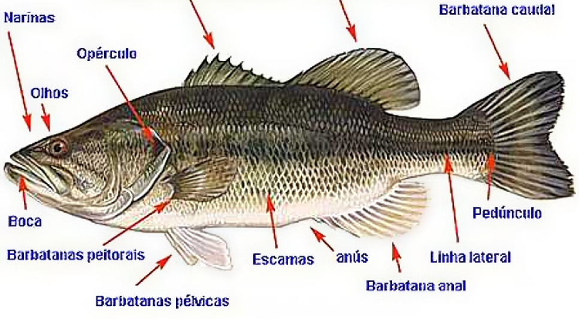

Características
Gerais
Os peixes são animais vertebrados, aquáticos, de corpo recoberto de escamas, respiração branquial e pecilotérmicos, ou seja, não controlam seu próprio metabolismo. São encontrados em água salgada e doce, os peixes surgiram há, aproximadamente, 530 milhões de anos, durante o período Devoniano.
Alguns são herbívoros, alimentam-se principalmente de algas. Outros são carnívoros, alimentam-se de outros peixes e de animais diversos como moluscos e crustáceos.
Podem ter hábitos curiosos. O peixe-arqueiro, por exemplo, habitante dos pântanos e arrozais, costuma nadar lentamente junto à superfície. De repente percebe um inseto sobrevoando o local, o peixe cospe-lhe água, derruba-o e engole-o rapidamente.

Classificação
Osteíctes (peixes ósseos)– são todos os peixes que possuem vértebras bem formadas e membros mantidos por raios divergentes (hastes ósseas que servem de esqueleto às nadadeiras). Divide-se em dois grupos principais: os peixes de barbatana lisa e os de barbatana espinhosa. Entre eles estão o atum, a sardinha, o bacalhau, a garoupa, o dourado, o peixe espada, cavalo-marinho, etc.
Condríctes (peixes cartilaginosos) – são os peixes que não possuem ossos, apenas cartilagens que dão sustentação ao corpo. Entre eles estão os tubarões e as arraias.
Respiração
Para respirar os peixes dispõem de órgãos especiais chamados brânquias, que são, em geral, quatro pares (osteíctes). São protegidas por uma membrana (o opérculo), que se abre e fecha regularmente. Estão ligadas às paredes laterais da faringe. Nos condríctes não existe o opérculo e as branquias são em cinco ou sete pares.
Uma corrente contínua de água que entra pela boca banha as brânquias por frações de segundo, enquanto o opérculo se mantém preso ao tronco, fechando a passagem para a faringe. Em seguida, a boca se fecha e o opérculo abre, permitindo a saída da água para o meio exterior. As trocas entre o oxigênio e o gás carbônico acontecem durante a permanência da água em contato com as brânquias.
Reprodução dos peixes ósseos
A reprodução dos peixes, em sua maioria se da pela desova. A fêmea libera os óvulos em águas calmas e, em seguida o macho lança sobre eles os espermatozoides. Estes ovos ficam agrupados formando uma espécie de gelatina. Muitos deles são devorados por outros peixes, uma pequena parte se desenvolverem e se transformarem em alevinos (larvas).
Em outros peixes os filhotes se desenvolvem dentro do corpo da mãe, recebendo diretamente dela todos os nutrientes
Reprodução dos peixes cartilaginosos
Por outro lado, os peixes cartilaginosos, tubarões, arraias e quimeras, se reproduzem, em geral, por fecundação interna. Há, portanto, no macho uma nadadeira especial chamada clásper, que possui a função similar a do pênis nos mamíferos.
O macho introduz o clásper na cloaca da fêmea, ocorrendo a fecundação. As fêmeas podem ser vivíparas, ovovivíparas ou ovíparas. Ou seja, a mãe pode gerar filhotes na sua cavidade interna sem envoltório (ovo), em um ovo, dentro da mãe, ou realizar a postura de ovos no meio externo, respectivamente.
.gif)